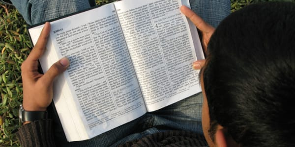

Meus hobbies:
Ler a Biblia
Como é maravilhoso quando tiramos um tempinho pra Deus, as vezes fazemos tanta coisas que esquecemos de agradecer a Deus, ele sempre esta do nosso lado, nunca nos abandona, sempre que prescisamos ele esta ali nos ouvindo, conhecer a palavra dele me dar um desejo de buscar conhecer mais ainda.
Adorar ao Senhor Jesus Cristo
Ir a Igreja para adorar a Deus é mais valioso do que ir para qualquer outro lugar, você sair da igraja renovado, cheio do Espírito Santo.
Conzinhar
Porque conzinha? eu gosto de estar inovando, fazer pratos diferentes, o tempo que fico na conzinha me faz sentir que o meu mundo é ali, fico concentrado no que eu estou fazendo, perco a noção do tempo.
Assistir a filmes e series

Gosto de estar assistindo filmes ou series em familia, se divertindo todos juntos, comer uma pipoquinha, fazer aquele cinema em casa.
Sair com os amigos

Nada como uma saida com os amigos, para colocar as conversas em dias e dar boas risadas, bons amigos não tem preço.